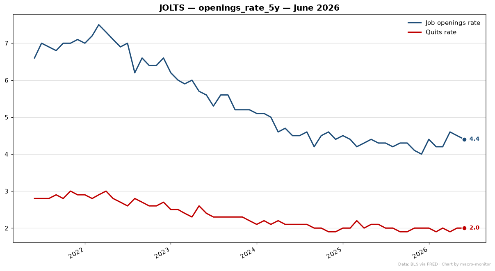

JOLTS — June 2026
Source: fred ·
Fetched: 2026-08-07T13:54:00.743163+00:00 ·
Latest observation: 2026-06 ·
Expected: 2026-06 ·
Stale: no
Headline
| Series | Primary | Also | Prior |
|---|
| Job openings (JTSJOL) | 7359.00 | yoy_pct 2.15% · mom_chg -178.0 | 7537.00 |
| Quits rate (JTSQUR) | 2.00% | MoM +0.0pp · YoY -0.1pp | 2.00% |
Definitions- Job Openings (JTSJOL): total unfilled job openings from the BLS JOLTS survey -- the labor-demand side; openings per unemployed worker is the tightness read.
- Quits Rate (JTSQUR): the share of workers voluntarily quitting each month, from JOLTS -- workers quit more when confident they can find something better, so a falling quits rate = cooling labor market.
Context
Anchor: JTSJOR (raw) · delta z-score vs 5y: -0.28σ
Components (thread)
| Series | Transform | Value |
|---|
| Job openings rate (z-score anchor) (JTSJOR) | raw | 4.40 |
| Hires (JTSHIR) | raw | 3.40 |
| Layoffs & discharges (JTSLDL) | raw | 1766.00 |
Charts
openings_rate_5y

Official release
View on agency site (PDF) ↗